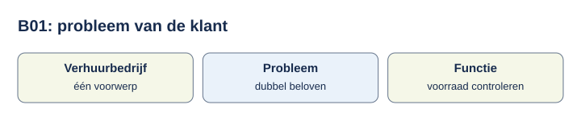
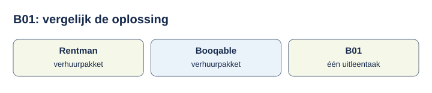
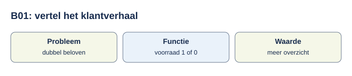

Werkboek Marketing
Werk steeds aan jullie eigen project. B01 is een voorbeeld. Bewaar bewijs één keer en link ernaar vanuit de team-README.
Klantcontact is vrijwillig. Vraag vóór een mail toestemming in jullie Issue. Een reactie of verkoop is niet verplicht. Schrijf kort, vriendelijk en zakelijk. Noem wie je bent, waarom je contact opneemt en stel één duidelijke vraag. Mail alleen na toestemming.
Oefening 1 | Kies een externe klant (30 november)

Opdracht: Manager richt de team-README in en wijst hoofdissue D aan jou toe. Open D via de README. Kopieer je rolbijdrage, vul jullie klantwens en het merkbare voordeel in en plaats die als eigen reactie onder D. De andere rollen reageren afzonderlijk. B01-voorbeeld: een klein verhuurbedrijf wil niet twee klanten hetzelfde voorwerp beloven. De functie toont of B01 beschikbaar is en weigert uitlenen bij voorraad 0.
 Opdracht: Manager richt de team-README in en wijst hoofdissue D aan jou toe. Open D via de README. Kopieer je rolbijdrage, vul jullie klantwens en het merkbare voordeel in en plaats die als eigen reactie onder D. De andere rollen reageren afzonderlijk. B01-voorbeeld: een klein verhuurbedrijf wil niet twee klanten hetzelfde voorwerp beloven. De functie toont of B01 beschikbaar is en weigert uitlenen bij voorraad 0.
Opdracht: Manager richt de team-README in en wijst hoofdissue D aan jou toe. Open D via de README. Kopieer je rolbijdrage, vul jullie klantwens en het merkbare voordeel in en plaats die als eigen reactie onder D. De andere rollen reageren afzonderlijk. B01-voorbeeld: een klein verhuurbedrijf wil niet twee klanten hetzelfde voorwerp beloven. De functie toont of B01 beschikbaar is en weigert uitlenen bij voorraad 0.Klaar als: Kun je zeggen wie de klant is, welk probleem die heeft en welk voordeel een oplossing geeft? Staat jouw bijdrage in D bij de andere drie bijdragen?
Jullie project: Kies een mogelijke externe klant voor jullie bestaande project. Bewijs: jouw reactie onder D, bereikbaar via de team-README.
 Bewijs: jouw reactie onder D, bereikbaar via de team-README.
Bewijs: jouw reactie onder D, bereikbaar via de team-README.Oefening 2 | Vergelijk de klantwaarde (4 december)

Opdracht: Gebruik dezelfde klanttaak en twee situaties als in het ontwerp. Vergelijk eventueel twee haalbare manieren om die taak op te lossen aan dezelfde klantwens. Dit is de vergelijking die bij Ontwerp: Sterk hoort. Een vergelijking met andere bedrijven of producten en prijsclaims zijn niet nodig.
Klaar als: Kun je uitleggen welk probleem de versie oplost en wat de klant eraan heeft? Staan de twee eerste uitkomsten en het verbeterpunt uiterlijk 4 december in E?
Jullie project: Als jullie voor Ontwerp: Sterk gaan, zet twee keuzes voor dezelfde klantwens in D. Leg kort uit welke keuze het best past. Dit hoort bij de ontwerpreactie onder D, geen extra inleverwerk.
Oefening 3 | Leg inkomsten uit (8 december, 16.00 uur)

Opdracht: Bij J vul je de klantwaarde aan in het Marketing-deel van D. B01-voorbeeld: een juiste voorraad kan dubbele toezeggingen en zoekwerk voorkomen. €19 per maand voor gebruik en onderhoud is een aanname, geen echte verkoop of bewezen prijs. I verwijst naar jouw aanvulling in D.
Klaar als: Staat de klantwaarde bij J in D, is duidelijk wie waarvoor zou betalen en waarom en is elke aanname herkenbaar? Verwijst I terug naar D? Is een klantmail beleefd, duidelijk en kort en verstuur je die alleen na toestemming? Staan de verbetering en beide hertests uiterlijk 8 december om 16.00 uur in I?
Jullie project: Kies een passend verdienidee; een abonnement is niet verplicht. Als jullie een klant mailen, schrijf bijvoorbeeld: ‘Goedendag, wij maken een uitleenfunctie. Hoe houdt u nu bij wat beschikbaar is?’ Verstuur pas na toestemming. Bewijs: vul klantprobleem, waarde en verdienidee bij J rechtstreeks aan in D. I verwijst naar die bestaande plek. Een mail is niet verplicht.
Oefening 4 | Vertel het klantverhaal (10 tot 17 december)

Opdracht: Bereid je drie mondelingvragen vóór 8 december voor in M. Open daarna de team-README en probeer de geteste versie. B01-voorbeeld: ‘Het verhuurbedrijf ziet voorraad 0 en belooft B01 daardoor niet nog eens aan een klant.’
Klaar als: Kun je jouw bijdrage aanwijzen en uitleggen wat de functie wel en nog niet oplost? Voorspel de uitkomst bij nieuwe invoer en leg uit waarom. Vertel wat je teamgenoot inbracht, wat daardoor veranderde en wat jullie volgende stap is.
Jullie project: Vertel dit met jullie echte klant, functie en geteste versie. Bewijs: bestaand werk dat je tijdens het mondeling aanwijst, geen extra verslag.